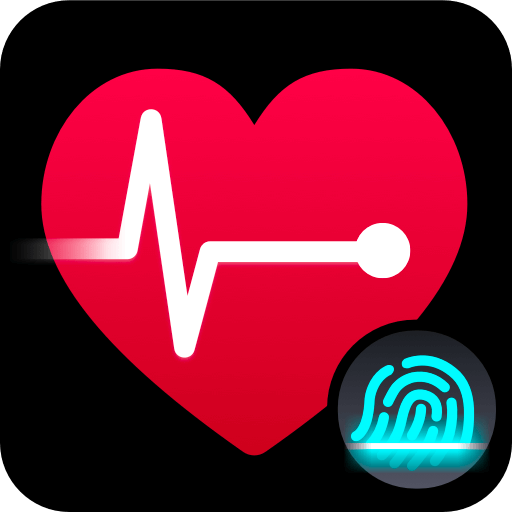

Cardiovascular Wellness
Accurate Pulse, Instantly.
Heart Rate Monitor – Pulse App transforms your smartphone into a powerful health tool, providing medical-grade pulse tracking and in-depth waveform analysis to keep your heart healthy.

What is Pulse App?
The Pocket Pulse Oximeter
Heart Rate Monitor – Pulse App uses your phone's camera to detect color changes in your fingertip, simulating the technology of a pulse oximeter. It offers real-time PPG waveform graphs and advanced AI analysis to provide highly accurate BPM readings without requiring extra hardware.
How To Use
Measure Your Heart Rate in 6 Steps
Launch Pulse App
Open the app and prepare to measure. Ensure you are in a well-lit area or use the built-in flashlight toggle.
Position Your Finger
Gently place one fingertip over the rear camera lens, ensuring it is completely covered.
Apply Gentle Pressure
Do not press too hard; excessive pressure restricts blood flow and can lead to an inaccurate reading.
Stay Still
Hold your position for 10–15 seconds while the app processes the pulse signals and generates a waveform.
View Detailed Analysis
Check your BPM result along with the real-time graph (PPG) to verify the rhythm is consistent.
Tag & Export
Label your reading as "Resting" or "Post-Workout" and export your history to CSV or PDF for your doctor.
VIDEO TUTORIAL
Pulse App Walkthrough
Benefits
Why Use Heart Rate Monitor
Waveform Insights
Visualize your heart rhythm with real-time PPG graphs, just like professional medical equipment.
Easy Sharing
Generate clean PDF reports or CSV logs to share your cardiovascular history with healthcare providers.
Privacy First
Your data is stored locally or synced securely with Apple Health, keeping your vitals private.